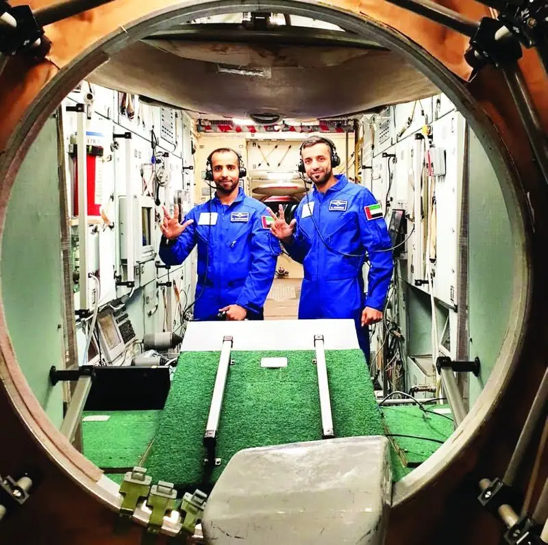
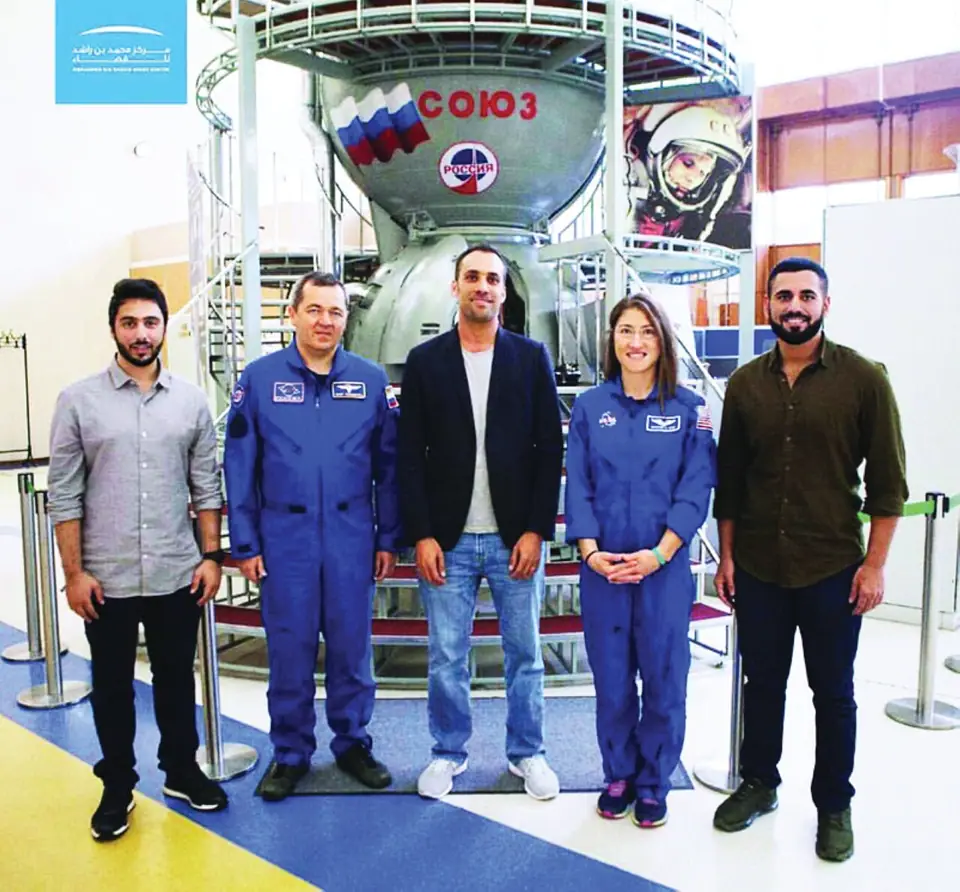
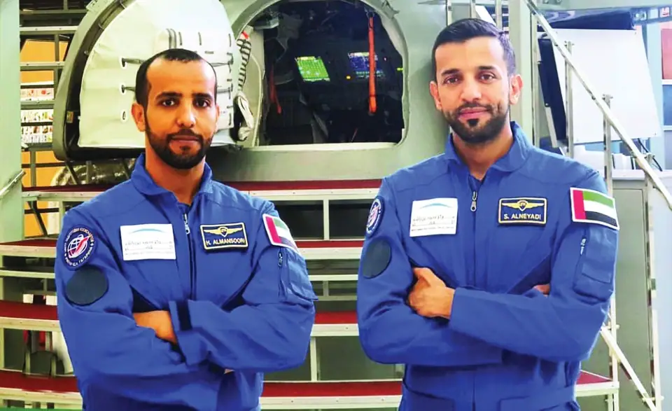
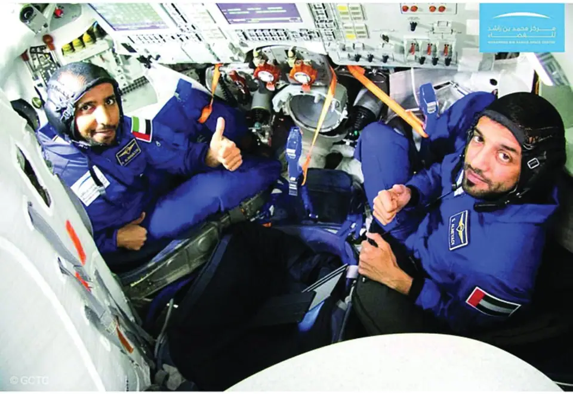

Science news ·
The Mohammed bin Rashid Space Centre will announce tomorrow the launch date of the first Emirati astronaut
At a press conference tomorrow the Mohammed bin Rashid Space Centre will reveal the launch date of the first Emirati astronaut and the experiments he will conduct on the station.
This post is in Arabic; the title and summary above are translated. The original text follows.
المصدر: دبي ـ أحمد يحيى – التاريخ: 24 فبراير 2019
يكشف مركز محمد بن راشد للفضاء في مؤتمر صحافي يعقد غداً، النقاب عن تاريخ انطلاق رحلة أول رائد فضاء إماراتي، كما سيتم عرض مختلف التجارب التي سيتم إجراؤها على متن المحطة الدولية، فضلاً عن التدريبات القوية التي خضع لها الرائد.

اختبارات قوية
وتلقى المنصوري والنيادي خلال الشهور الماضية منذ وقت الإعلان عن اختيارهما لهذه المهمة التاريخية في سبتمبر الماضي، في مركز يوري غاغارين لتدريب رواد الفضاء في روسيا، العديد من الاختبارات القوية ومن ضمنها، اختبار الطرد المركزي حيث تعرض الرائدان إلى قوة جاذبية تصل إلى 8 أضعاف وزنهما الطبيعي، ويستخدم جهاز الطرد المركزي لمحاكاة الدفع الكبير لرواد الفضاء نحو مقاعدهم، وخصوصاً عند انطلاقهم بسرعة نحو الفضاء ومرحلة العودة، وصممت هذه التجارب لتدريب رواد الفضاء للتكيف على حالات نقص الأوكسجين في الدماغ، ومنع فقدان الوعي بسبب قوة التسارع الضخمة التي يتعرضون إليها.
وضمت التجارب كذلك تدريبات المحاكاة لمركبة السويوز الروسية في مركز يوري غاغارين لتدريب رواد الفضاء، فضلاً عن تدريبات أخرى للتدريب في بيئة تحاكي انعدام الجاذبية، حيث تدرب الرائدان الإماراتيان على ارتداء بدلة الفضاء «سوكول» التي يبلغ وزنها 10 كيلوغرامات في غضون 25 ــ 30 ثانية فقط، فيما يلتقطان خلال هذه المدة القصيرة لوحاً يزن 50 كيلوغراما، وذلك لمحاكاة التعامل مع المعدات والأدوات في بيئة العمل في محطة الفضاء الدولية، وشملت التدريبات المكثفة أيضاً التواجد بغرفة الضغط التي تحاكي الارتفاع عن سطح البحر بـ5 و10 كيلومترات، الأمر الذي يؤدي إلى انخفاض الضغط الجوي ونسب الأوكسجين في المعدلات الطبيعية.
وتدرب الرائدان كذلك على كيفية صيانة وإدارة الحمولات، بالإضافة إلى مجموعة من المهارات الأخرى التي تشمل علم الروبوت، والملاحة، والإسعافات الطبية، وإدارة الموارد، والتدريب على عمليات التقاء والتحام المركبات الفضائية بالمحطة الدولية.

مراحل الاختيار
وافتتح مركز محمد بن راشد للفضاء التسجيل الإلكتروني للتقدم لبرنامج «الإمارات لرواد الفضاء» في ديسمبر 2017، حيث بلغ عدد المتقدمين في المرحلة الأولى حينها 4022 شخصاً، ووصل عدد تخصصات المتقدمين إلى 38، شملت الهندسة، الطيران، الطب، القطاع العسكري، وإدارة الأعمال، فيما تم البدء بتقييم المتقدمين، حيث تم ترشيح 95 شخصاً تم اختيار 39 منهم في مرحلة لاحقة، ووصلوا إلى 18 مترشحاً ثم 9، وصولاً للإعلان عن اختيار هزاع المنصوري وسلطان النيادي.
وبلغ عدد أعضاء اللجنة المختصة المعنية باختيار المترشحين للبرنامج 20 شخصاً متخصصاً، من بينهم 5 من كوادر مركز محمد بن راشد للفضاء، فيما يتم تمويل برنامج الإمارات لرواد الفضاء من خلال صندوق تطوير قطاع الاتصالات وتقنية المعلومات، الذراع التمويلي للهيئة العامة لتنظيم قطاع الاتصالات الذي تم إطلاقه في عام 2007 ويعتبر الأول من نوعه في الشرق الأوسط الذي يهدف إلى تطوير القطاعات التقنية في الدولة بما يعزز قدرتها التنافسية للنجاح في السوق العالمية.
أبحاث
وسيكون مطلوباً من المنصوري أو النيادي إجراء أبحاث علمية متعمقة في مختلف التخصصات العلمية الفضائية والفيزيائية والبيولوجية وعلوم الأرض، على متن المحطة الدولية وذلك لتطوير المعرفة العلمية الإنسانية، والتوصل إلى استكشافات علمية مع بقية رواد الفضاء هناك، خاصة أنهما نجحا في الوصول إلى المرحلة النهائية من الترشيحات بعد أن اجتازا 6 مراحل من الاختبارات الطبية والنفسية المتقدمة فضلاً عن المقابلات الشخصية التي تمت بالتعاون مع وكالة الفضاء الأميركية «ناسا» والاختبارات الطبية المتقدمة في وكالة الفضاء الروسية «روسكوسموس»، فيما يعكس ذلك كله القدرات الفائقة التي يتمتعان بها، والمردود الإيجابي الذي ينتظر من وراء هذه المهمة التاريخية.

أبحاث متنوعة
وتتنوع أهداف برنامج الإمارات لرواد الفضاء والتي تهتم بإجراء الأبحاث المتعلقة بالأمن الغذائي، والموارد المائية المستدامة، ودعم الحياة البشرية، فضلاً عن إدارة الطاقة والكهرباء، وتطوير علوم المواد، وتشمل مجالات البحث هذه علم الأحياء والعلوم الفيزيائية وعلوم الأرض والفضاء والبحوث البشرية.
وتخدم هذه المهام العلمية لرائد الفضاء الإماراتي المشاريع الفضائية المستقبلية للإمارات، لترسيخ مساهمة الدولة في مسيرة المعرفة الإنسانية، خاصة أن البرنامج هو الأول من نوعه على مستوى العالم العربي، ويطمح إلى تطوير كوادر إماراتية قادرة على الانضمام إلى بعثات الفضاء والمشاركة في المسيرة الإنسانية لاستكشافه مستقبلاً، وتمثيل العرب في مجال علوم الفضاء، كما تتوافق أهداف البرنامج مع مشروع المريخ 2117، الذي يلقي الضوء على مختلف مجالات الاهتمام باستكشاف الفضاء والتحديات التي قد تواجه البشر مستقبلاً، ومن بينها الأمن الغذائي، واستدامة الموارد الطبيعية مثل الماء، وصحة الإنسان، والطاقة، وتطوير علوم المواد، وإدارة الملوثات الفضائية.
تميز علمي
وتعتبر الخلفيات العلمية والمهنية المتخصصة جداً لهزاع المنصوري وسلطان النيادي، ميزة إضافية لكليهما نحو تميز أكبر، حيث إن المنصوري حاصل على بكالوريوس في علوم الطيران من كلية خليفة بن زايد الجوية، فيما يمتلك كذلك خبرة تزيد على 14 عاماً في الطيران الحربي، وخضع لمجموعة واسعة من البرامج التدريبية في الدولة وخارجها، ومن ناحيته لم يكن النيادي أقل تميزاً خاصة أنه حاصل على الدكتوراه في تكنولوجيا المعلومات من جامعة عالمية، ويعمل مهندس اتصالات وإلكترونيات، وباحثاً في أمن المعلومات، وشارك في عدد من المؤتمرات العالمية ولديه أوراق بحث منشورة في دوريات دولية.
مشاريع علمية
تضمن «البرنامج الوطني للفضاء» الذي أطلقته قيادة الدولة في 2017، عدة مشاريع كبرى، كان من بينها «برنامج الإمارات لرواد الفضاء»، الذي سعى إلى رسم مسار واعد للتنمية البشرية، والإعداد العلمي لفريق من الإماراتيين الذين سيتم تدريبهم وإعدادهم للسفر إلى الفضاء، خاصة أنه سيكون له انعكاسات مهمة على الكثير من القطاعات الحيوية، فضلاً عن تحقيق رؤية القيادة بمنح الوطن إرثاً علمياً يُلهم الأجيال الشابة لسنوات مقبلة.
بدل الرواد
يحتاج رواد الفضاء إلى بدل مختلفة توفر لهم الراحة، فمنها الداخلية التي توفر حماية للجسم من الحر والبرد والحريق، ومنها بدل الرياضة، والنوم، والدخول والخروج إلى المركبة، والمخصصة للسير في الفضاء، والأخيرتان تحملان العديد من الجيوب لحمل أدوات الإصلاح، والإنقاذ، والأدوية، والطعام، وتجمع الملابس المستهلكة عند رحلة العودة للأرض في كيس خاص وتلقى من المركبة عند اقترابها من الغلاف الجوي للأرض.
